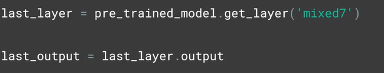
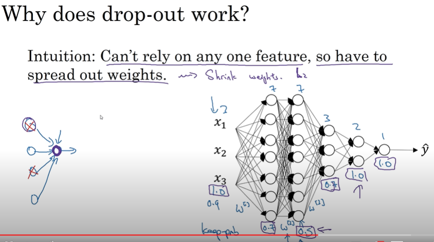
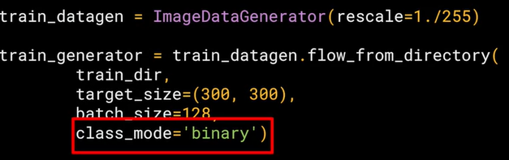

CNN
Training large datasets
Augmenting the image
Some of the nice things with being able to do image augmentation is that we can then,
I think you just use the term create new data, which is effectively what we're doing.
So for example, if we have a cat and our cats in our training dataset are always upright and their ears are like this, we may not spot a cat that's lying down. But with augmentation, being able to rotate the image, or being able to skew the image, or maybe some other transforms would be able to effectively generate that data to train off.
So you skew the image and just toss that into the training set.
But there's an important trick to how you do this in TensorFlow as well to not take an image, warp it, skew it, and then blow up the memory requirements. So TensorFlow makes it really easy to do this.
We use ImageDataGenerator for this
Rotation range is a range from 0-180 degrees with which to randomly rotate images.
So in this case, the image will rotate by random amount between 0 and 40 degrees. Shifting, moves the image around inside its frame.
Many pictures have the subject centered. So if we train based on those kind of images, we might over-fit for that scenario. These parameters specify, as a proportion of the image size, how much we should randomly move the subject around.
So in this case, we might offset it by 20 percent vertically or horizontally. Shearing is also quite powerful. So for example, consider the image on the right. We know that it's a person. But in our training set, we don't have any images of a person in that orientation. However, we do have an image like this one, where the person is oriented similarly.
So if we shear that person by skewing along the x-axis, we'll end up in a similar pose.
That's what the shear_range parameter gives us. It will shear the image by random amounts up to the specified portion in the image.
So in this case, it will shear up to 20 percent of the image. Zoom can also be very effective.
For example, consider the image on the right. It's obviously a woman facing to the right.
Our image on the left is from the humans or horses training set. It's very similar but it zoomed out to see the full person.
If we zoom in on the training image, we could end up with a very similar image to the one on the right.
Thus, if we zoom while training, we could spot more generalized examples like this one. So you zoom with code like this. The 0.2 is a relative portion of the image you will zoom in on.
So in this case, zooms will be a random amount up to 20 percent of the size of the image.
Another useful tool is horizontal flipping. So for example, if you consider the picture on the right, we might not be able to classify it correctly as our training data doesn't have the image of a woman with her left hand raised, it does have the image on the left, where the subjects right arm is raised. So if the image were flipped horizontally, then it becomes more structurally similar to the image on the right and we might not over-fit to right arm raisers. To turn on random horizontal flipping, you just say horizontal_flip equals true and the images will be flipped at random.
Finally, we just specify the fill mode.
This fills in any pixels that might have been lost by the operations. I'm just going to stick with nearest here, which uses neighbors of that pixel to try and keep uniformity. Check the carets documentation for some other options. So that's the concept of image augmentation.

Transfer Learning
Rather than needing to train a neural network from scratch we can need a lot of data and take a long time to train, you can instead download maybe an open-source model that someone else has already trained on a huge dataset maybe for weeks and use those parameters as a starting point to then train your model just a little bit more on perhaps a smaller dataset that you have for a given task, so it is called transfer learning.
Inception
Imagenet
snapshot of model after trained
it's fortunate that keras has the model definition built in.
So you instantiate that with the desired input shape for your data, and specify that you don't want to use the built-in weights, but the snapshot that you've just downloaded. The inception V3 has a fully-connected layer at the top.
So by setting include_top to false, you're specifying that you want to ignore this and get straight to the convolutions.
Now that I have my pretrained model instantiated, I can iterate through its layers and lock them, saying that they're not going to be trainable with this code. You can then print a summary of your pretrained model with this code but be prepared, it's huge. There's no way I can fit it all in a slide, even if I use a two point font like this.

But with this code, I'm going to grab that layer from inception and
take it to output.
dropouts

- randomly knocking out units in the network
- working on smaller neural network
- main unit can rely on one feature. cant put weight on one previous units
- different keep_prob explain a range for avoid overrfitting in those specific layers
- lower the keep_prob makes major dropout functionality (like updating a specific lambda value on the polynomial function)
- downside it gives us more hyperparams using cross validation
- computer vision uses alot dropout - a regularization technique for overfitting
- J cost function is not well defined anymore - losses it as debugging tool for double check
-
 turn off dropout and check it is monotonically decreasing J and check the code is working
turn off dropout and check it is monotonically decreasing J and check the code is workingexploring dropout
By dropping some out, we make it look like this.
And that has the effect of neighbors not affecting each other too much and potentially removing overfitting.
Multiclass classification
https://laurencemoroney.com/datasets.html
